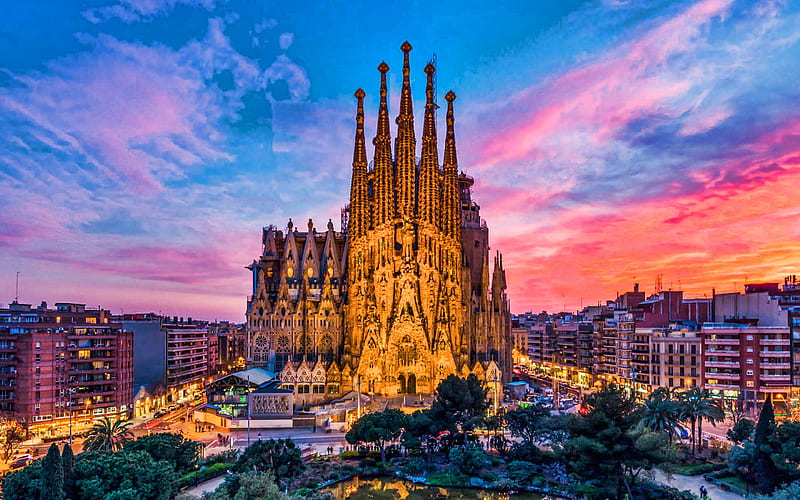
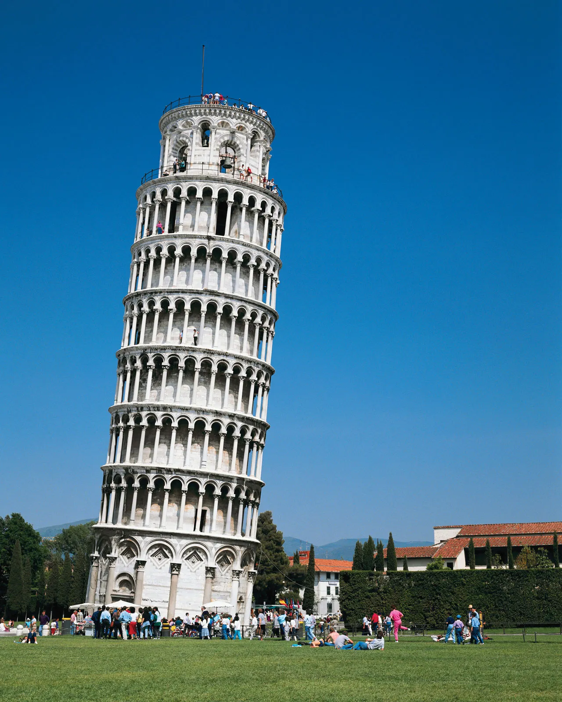

The age of Wonder and Imagination

The Colosseum
The Colosseum, also known as the Flavian Amphitheatre, is an ancient Roman architectural marvel located in the heart of Rome, Italy. Constructed between 70-80 AD, it is the largest amphitheater ever built and stands as a symbol of the grandeur and engineering prowess of the Roman Empire. The Colosseum was primarily used for gladiatorial contests and public spectacles, hosting thousands of spectators in its massive seating areas.

Sagrada Familia | Antoni Guadi
The Sagrada Familia is an iconic basilica in Barcelona, Spain, designed by architect Antoni Gaudí. Known for its unique blend of Gothic and Art Nouveau styles, the basilica features intricate facades, towering spires, and a breathtaking interior filled with vibrant stained glass windows. Construction on the Sagrada Familia began in 1882 and continues to this day, making it a symbol of ongoing architectural marvel and Gaudí's visionary legacy.

The Taj Mahal | Emperor Shah Jahan
The Taj Mahal is a world-renowned monument located in Agra, India. Built by Mughal Emperor Shah Jahan in the 17th century, it stands as a mausoleum for his beloved wife, Mumtaz Mahal. The Taj Mahal is celebrated for its exquisite white marble architecture, intricate inlay work, and symmetrical design, making it a UNESCO World Heritage site and an enduring symbol of love and beauty.

Parthenon
The Parthenon is an iconic ancient Greek temple located on the Acropolis hill in Athens, Greece. Built between 447 and 438 BCE, it was dedicated to the goddess Athena, the patron deity of Athens. The Parthenon is celebrated for its exquisite Doric architectural style, harmonious proportions, and intricate decorative sculptures. It stands as a testament to the achievements of ancient Greek civilization and remains an enduring symbol of classical Greek art and culture.

Burj Khalifa
The Burj Khalifa is a towering skyscraper located in Dubai, United Arab Emirates. Standing at a height of 828 meters (2,717 feet), it is the tallest building in the world. Designed by the architectural firm Skidmore, Owings & Merrill, the Burj Khalifa features a sleek and modern design, with a unique telescopic structure that tapers as it rises. It is not only an engineering marvel but also houses luxury residences, offices, hotels, observation decks, and a range of world-class amenities, making it a symbol of Dubai's ambition, innovation, and grandeur.

Leaning Tower of Pisa
The Leaning Tower of Pisa is an iconic architectural structure located in Pisa, Italy. Built as a freestanding bell tower for the adjacent cathedral, its construction began in the 12th century and was completed in the 14th century. The tower is famous for its noticeable lean, caused by an unstable foundation, which has made it a popular tourist attraction. Despite its lean, efforts have been made to stabilize the tower and prevent further tilting, allowing visitors to admire its intricate design and climb its spiral staircase for panoramic views of Pisa.